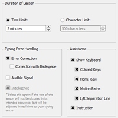

Training | Table of Contents | Getting started with a Lesson
Training | Table of Contents | Getting started with a Lesson 
6.2 Lesson Parameters
You can adjust lesson parameters on the right side of the main window. They are divided in three areas.

6.2.1 Duration of Lesson
Since the dictation of the Training Lesson varies depending on your typing errors the duration of the lesson can only be set either by using a Time Limit or by determining the number of characters that will be dictated (Character Limit). You can also select Entire Lesson if you have deactivated the Intelligence feature in both Open Lessons and Own Lessons so that the text of the lesson is dictated one time through from start to finish.
The default duration is five minutes which is the equivalent of a character limit of 500 characters at a typing speed of 100 strokes a minute and no errors.
Note: When Intelligence (see further below) is deactivated the Entire Lesson option is automatically selected. You can turn off this standard setting in General Settings (please refer to chapter 7.4).
6.2.2 Response to Typing Errors
There are several ways the typing tutor can respond to your typing errors.
Block Typing Errors means the dictation stops each time you make a typing error and waits for you to find the right key. The character that was mistyped is marked in orange in the scroll text. This option is the software default. If you deactivate this option your typing errors will be counted but the typing tutor will skip correction and immediately prompt you to enter the next character.
If Block Typing Errors is activated you can also select the Correction with Backspace option. Every typing error you make will have to be deleted with the backspace key before you can type the correct character and continue the lesson. This comes closest to a real-world typing situation but it is not the default setting as it is only suitable for advanced users.
You can select the Audible Signal option if you want to hear an audible signal each time you make a typing error. The signal can come through the sound card or the PC's internal speaker (please refer to General Settings in chapter 7.1).
The Intelligence option is only enabled with Open and Own Lessons. In Training Lessons the Intelligence option is always on and marked in grey.
When Intelligence is activated the dictation lines (words or sentences) are not dictated sequentially but are delivered in a way that takes into consideration your typing error rate so that you can eliminate your errors and increase you learning success. This can be very useful for shedding some bad typing habits but the dictation text frequently makes little or no sense.
If Intelligence is turned off the dictation is delivered sequentially and you can select the Entire Lesson option under Duration of Lesson (see above).
Note: It is only useful to activate the Intelligence feature with lessons consisting of a large number of lines. Please refer to the chapter 6.1.3 (Own Lessons).
6.2.3 Assistance
There are various visual aids to support you during your typing lessons. All help features are preset when the software is installed.
With the Show Keyboard option you can choose to have the help function displayed as a virtual keyboard. If you deactivate this option you will only see the ticker and the status bar when you practice typing.
If you have activated the keyboard you can choose to turn individual help functions on or off:
If you have selected the Colored Keys option the keys that are to be pressed will be displaced in color. The color coding also tells you which finger to use.
The home row will be displayed at the beginning of a lesson and during typing practice if the Home Row option has been selected.
The Motion Paths option will show you the path each finger should take from the home row to a key outside of the home row.
L/R Separation Line activates a separation line showing you which keys are accessed with your left hand and which keys are accessed with your right hand.
The Instruction option will display a text in the status bar telling you which finger you need to use for the key that needs to be pressed.
For users who have no touch typing experience we recommend activating all assistance features.
 Training | Table of Contents | Getting started with a Lesson
Training | Table of Contents | Getting started with a Lesson 
© 2006-2011 Tom Thielicke IT Solutions